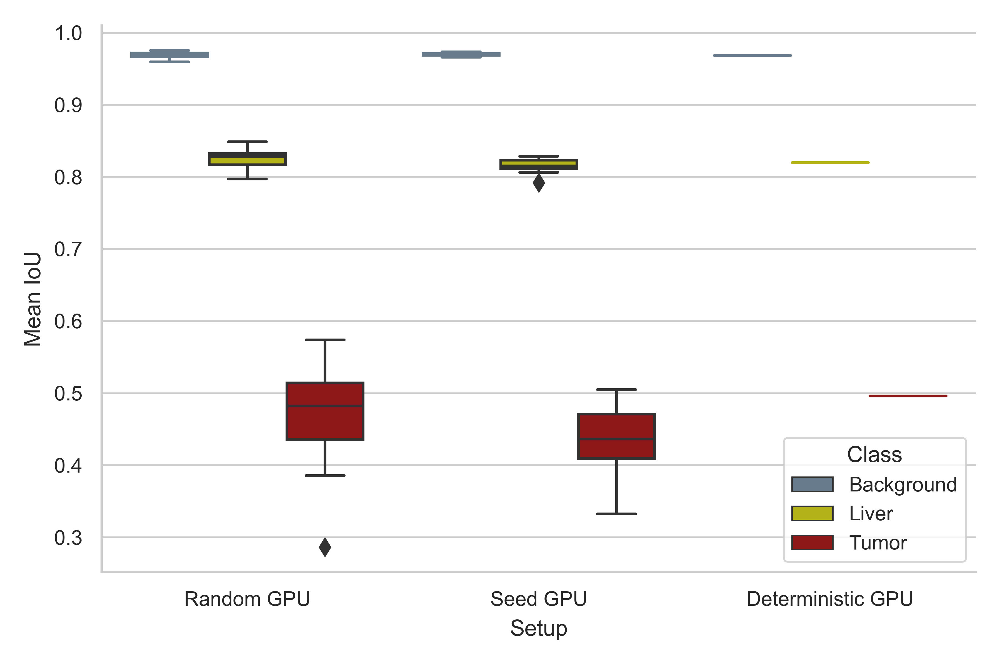

liver-ct-segmentation¶
Liver-tumor segmentation of computed tomography scans using a U-Net model.
Free software: MIT
Documentation: https://liver-ct-segmentation.readthedocs.io.
A reproducible, Pytorch-based model for liver-tumor segmentation of computed tomography (CT) scans using a 3D U-Net architecture. This project uses the Liver Tumor Segmentation Benchmark (LiTS) dataset to train a simplified U-Net model for semantic segmentation of liver and tumor tissue (background, liver, tumor) from abdominal CT scans.

A reproducibility analysis was conducted using three different experimental setups, a standard setup with disregard to reproducible calculations (Random), a setup where random seeds are defined (Seed), and the mlf-core deterministic setup (Deterministic). The LiTS dataset was randomly sampled to define a small test set (10%, 13 tomograms) and models were trained for 1000 epochs with the remainder of the tomograms, using the abovementioned experimental setups (10 training runs per setup). Reproducibility of prediction was tested by evaluating the performance of the models on the test set, using Intersection over Union (IoU) as a metric (Jaccard index).
{kind=link}
Architecture¶
A reduced 3D U-Net architecture. The U-Net is a convolutional “encoder-decoder” model for semantic segmentation of 2D and 3D images. In this simplified model, convolutional layers with a stride of 2 are used for down-sampling, while the up-sampling operation was performed with the nearest neighbor algorithm. Here, convolutions use filter sizes of 3x3x3, dropout is applied to every convolutional layer, and the softmax function is used on the last layer to produce class pseudo-probabilities. Blue boxes correspond to 3D multi-channel feature maps, with the number of channels denoted on top, and the size of the spatial dimensions marked in the lower left.

Credits¶
This package was created with mlf-core using Cookiecutter.